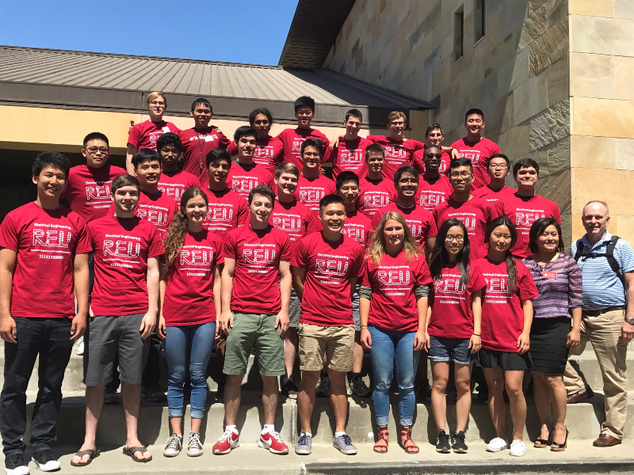
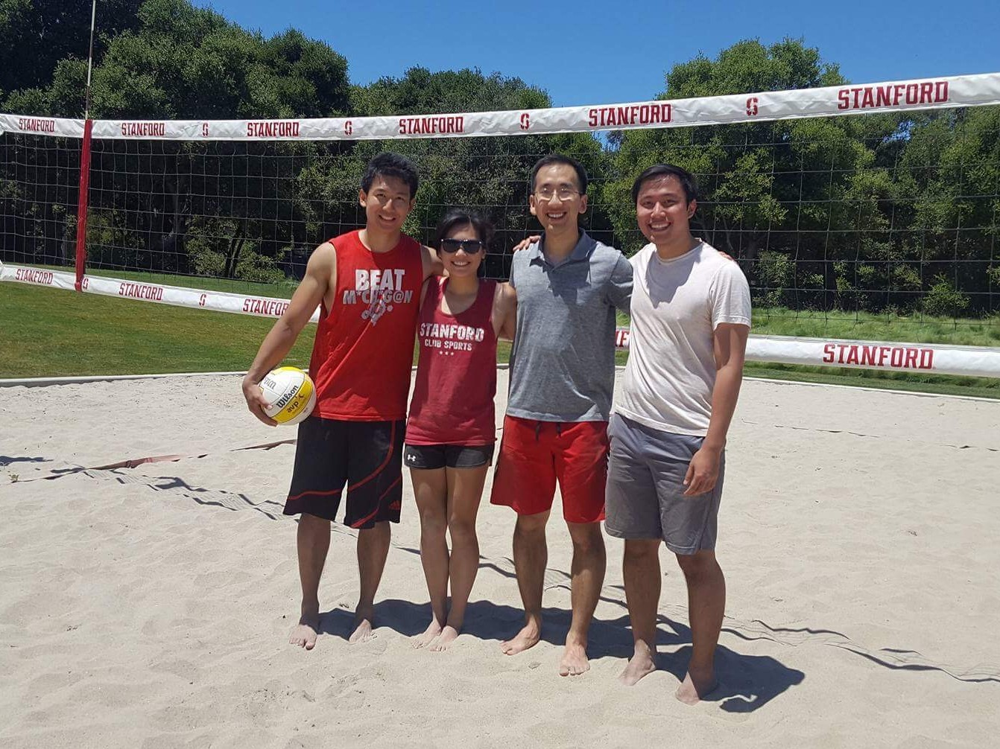

|   |
Aside from my academic work, I enjoy staying involved with school and department related activities. In undergraduate, I worked as a resident advisor for two years, where I helped students in my residence hall with academic and personal problems, transitioning to college, resolving conflicts, and organizing activities. In graduate school, I volunteer for department events for admit weekends and orientation to welcome new students to Stanford. For two summers, I have also served as the Workshop Coordinator for the Research Experiences for Undergraduates (REU) program.
Beyond my involvement with the school and department related events, I also enjoy playing basketball, sand volleyball, working out, hiking, going on bike rides, playing (rather, learning) music, and cooking.